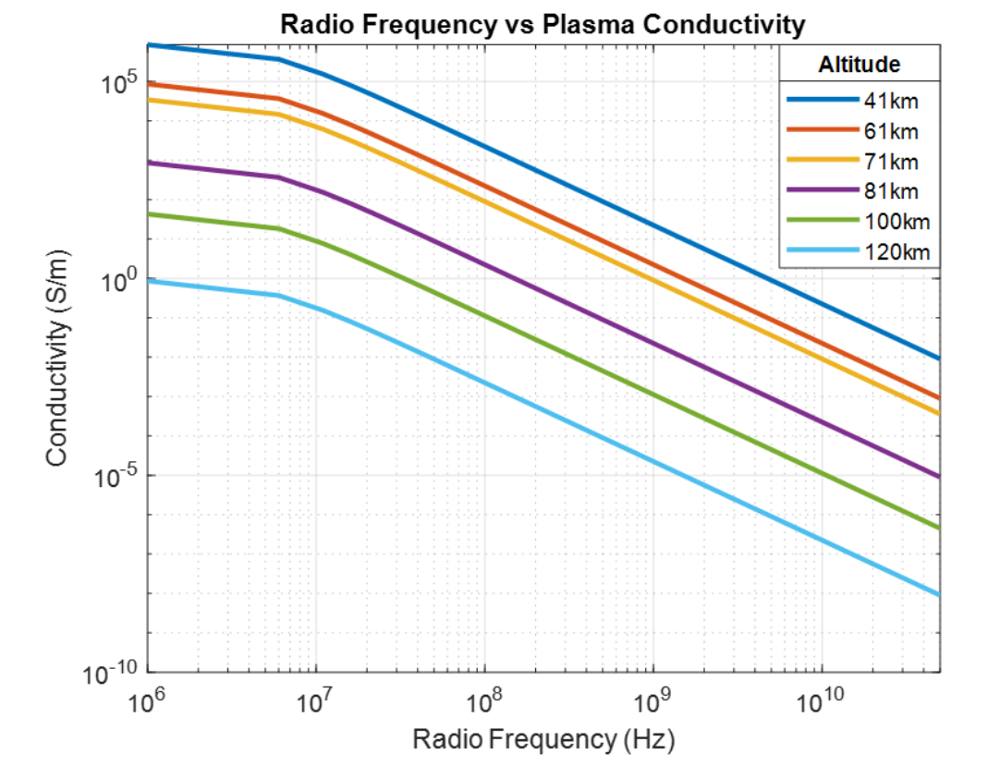
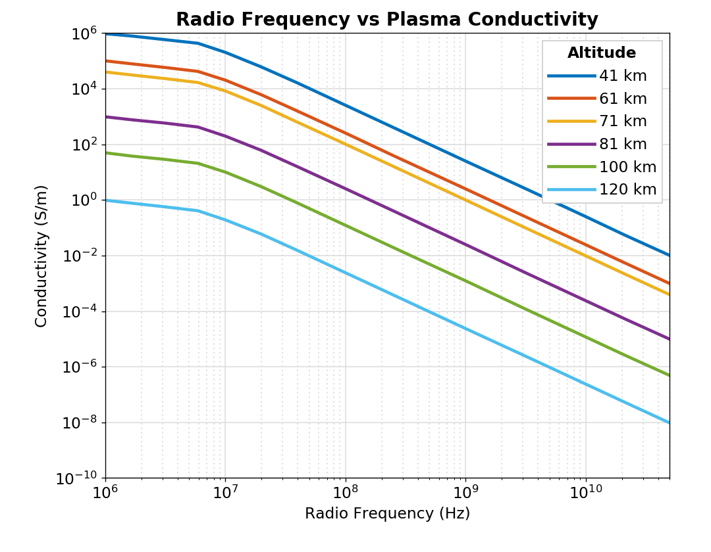

ASSIGNMENTS
16.S893 Assignments and Deliverables
Assignment 2: Figure Recreation
View DetailsThe goal of this assignment was to ask an agent to recreate a scientific figure. The figure chosen for this assignment was from Richard Peterson’s doctoral thesis Codesign of Plasma Avoidant and Plasma Embracive Antenna Topologies for Hypersonic Applications. The original image is shown below.

The agent then created a script to digitize the plot and recreate it, using a script that it wrote and is visible in the GitHub repository under assignment2. The recreated image was nearly identical, as seen below.
